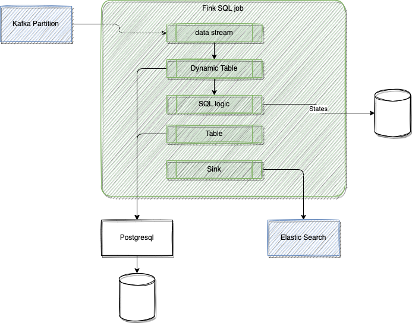

Flink SQL and Table API¶
Flink’s SQL support is based on Apache Calcite to support SQL based streaming logic implementation.
The Table API is a language-integrated query API for Java, Scala, and Python that allows the composition of queries from relational operators such as selection, filter, and join.
The Table API can deal with bounded and unbounded streams in a unified and highly optimized ecosystem inspired by databases and SQL.
It is possible to code the SQL and Table API in a java, scala or Python program or use SQL client, which is an interactive client to submit SQL queries to Flink and visualize the results.
Stream or bounded data are mapped to Table, the following command will load data from a csv file and create a dynamic table in Flink
CREATE TABLE employee_information (
cab_number INT,
plate VARCHAR,
cab_type VARCHAR,
driver_name VARCHAR,
ongoing_trip VARCHAR,
pickup_location VARCHAR,
destination VARCHAR,
passenger_count INT
) WITH (
'connector' = 'filesystem',
'path' = '/home/data/cab_rides.txt',
'format' = 'csv'
);
Programming model¶
- Start by creating a java application (quarkus create app for example) and a Main class. See code in flink-sql-quarkus folder.
- Add dependencies in the pom
<dependency>
<groupId>org.apache.flink</groupId>
<artifactId>flink-table-api-java-bridge</artifactId>
<version>${flink-version}</version>
</dependency>
<dependency>
<groupId>org.apache.flink</groupId>
<artifactId>flink-table-runtime</artifactId>
<version>${flink-version}</version>
<scope>provided</scope>
</dependency>
<dependency>
<groupId>org.apache.flink</groupId>
<artifactId>flink-table-planner-loader</artifactId>
<version>${flink-version}</version>
<scope>provided</scope>
</dependency>
The TableEnvironment is the entrypoint for Table API and SQL integration. See Create Table environment
public class FirstSQLApp {
public static void main(String[] args) {
StreamExecutionEnvironment env = StreamExecutionEnvironment.getExecutionEnvironment();
StreamTableEnvironment tableEnv = StreamTableEnvironment.create(env);
A TableEnvironment maintains a map of catalogs of tables which are created with an identifier. Each identifier consists of 3 parts: catalog name, database name and object name.
// build a dynamic view from a stream and specifies the fields. here one field only
Table inputTable = tableEnv.fromDataStream(dataStream).as("name");
// register the Table object in default catalog and database, as a view and query it
tableEnv.createTemporaryView("clickStreamsView", inputTable);

Tables may either be temporary, and tied to the lifecycle of a single Flink session, or permanent, and visible across multiple Flink sessions and clusters.
Queries such as SELECT ... FROM ... WHERE which only consist of field projections or filters are usually stateless pipelines. However, operations such as joins, aggregations, or deduplications require keeping intermediate results in a fault-tolerant storage for which Flink’s state abstractions are used.
ETL with Table API¶
See code: TableToJson
public static void main(String[] args) throws Exception {
StreamExecutionEnvironment streamEnv = StreamExecutionEnvironment.getExecutionEnvironment();
StreamTableEnvironment tableEnv = StreamTableEnvironment.create(streamEnv);
final Table t = tableEnv.fromValues(
row(12L, "Alice", LocalDate.of(1984, 3, 12)),
row(32L, "Bob", LocalDate.of(1990, 10, 14)),
row(7L, "Kyle", LocalDate.of(1979, 2, 23)))
.as("c_id", "c_name", "c_birthday")
.select(
jsonObject(
JsonOnNull.NULL,
"name",
$("c_name"),
"age",
timestampDiff(TimePointUnit.YEAR, $("c_birthday"), currentDate())
)
);
tableEnv.toChangelogStream(t).print();
streamEnv.execute();
}
Join with a kafka streams¶
Join transactions coming from Kafka topic with customer information.
// customers is reference data loaded from file or DB connector
tableEnv.createTemporaryView("Customers", customerStream);
// transactions come from kafka
DataStream<Transaction> transactionStream =
env.fromSource(transactionSource, WatermarkStrategy.noWatermarks(), "Transactions");
tableEnv.createTemporaryView("Transactions", transactionStream
tableEnv
.executeSql(
"SELECT c_name, CAST(t_amount AS DECIMAL(5, 2))\n"
+ "FROM Customers\n"
+ "JOIN (SELECT DISTINCT * FROM Transactions) ON c_id = t_customer_id")
.print();
SQL Client¶
The SQL Client aims to provide an easy way of writing, debugging, and submitting table programs to a Flink cluster without a single line of code in programming language. Add the following declaration in docker compose file to get a new process
services:
sql-client:
image: jbcodeforce/flink-sql-client
container_name: sql-client
depends_on:
- jobmanager
environment:
FLINK_JOBMANAGER_HOST: jobmanager
Then use a command like:
docker exec -ti sql-client bash
#
./sql-client.sh
Challenges¶
- We cannot express everything in SQL but we can mix stream and Table APIs
Read more¶
- SQL and Table API overview
- Table API
-
Flink API examples presents how the API solves different scenarios:
- as a batch processor,
- a changelog processor,
- a change data capture (CDC) hub,
- or a streaming ETL tool